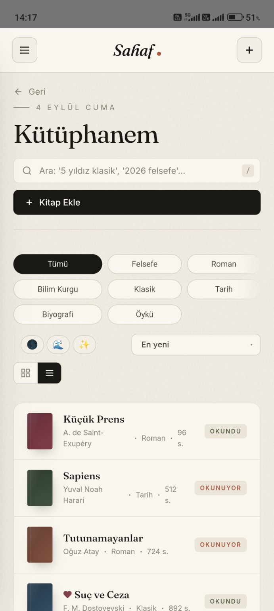
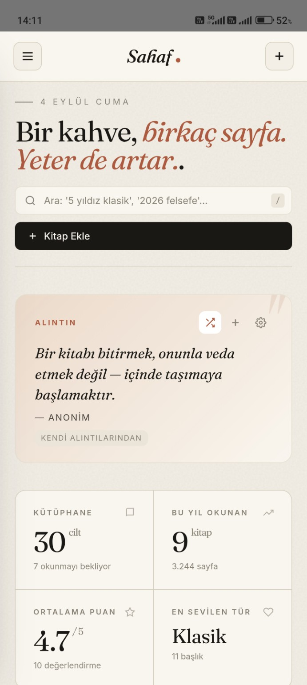
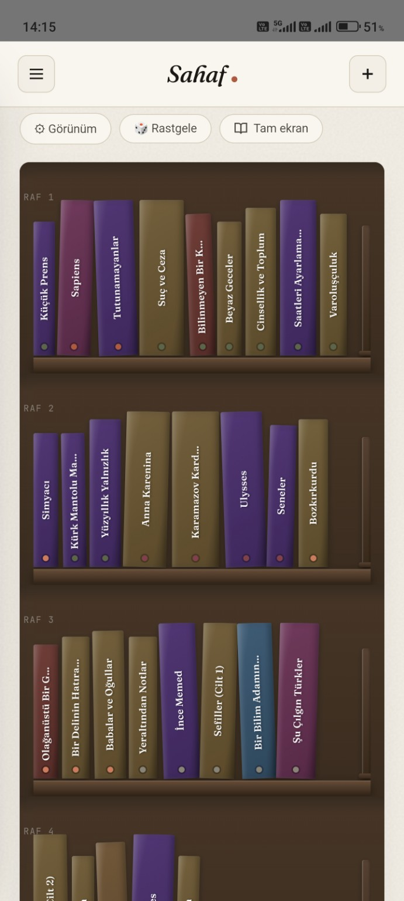
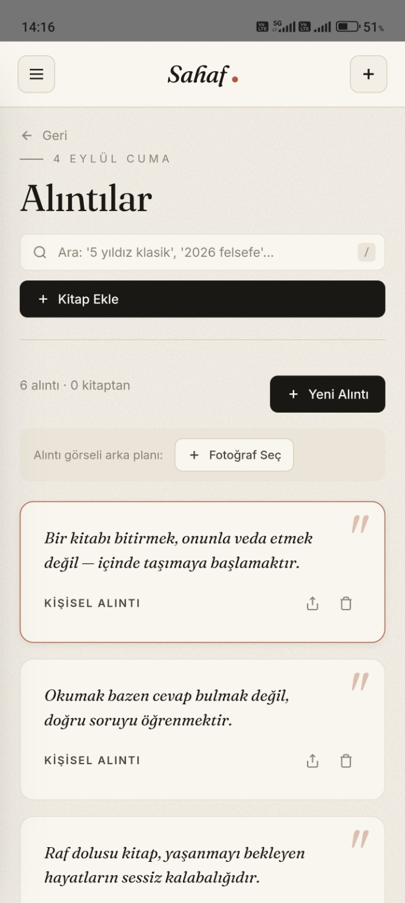
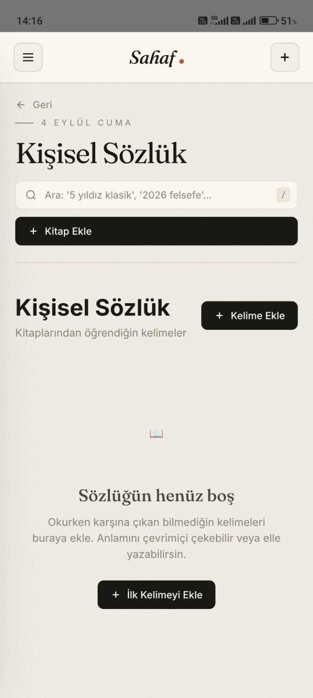
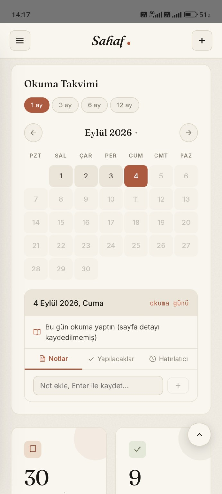
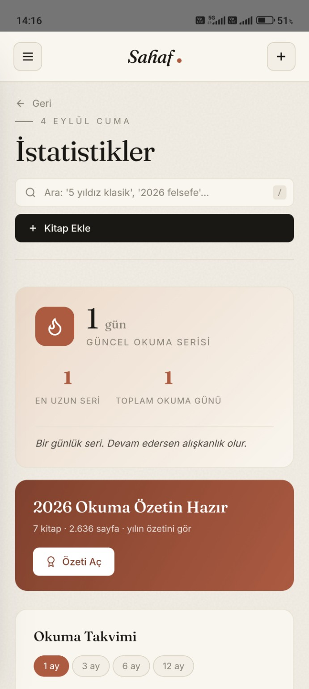
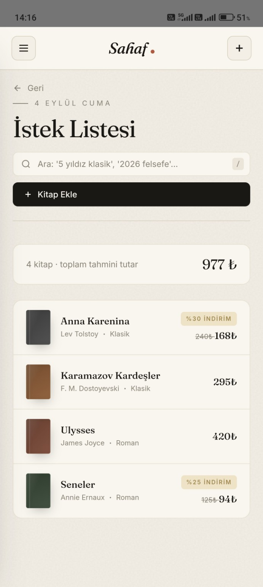
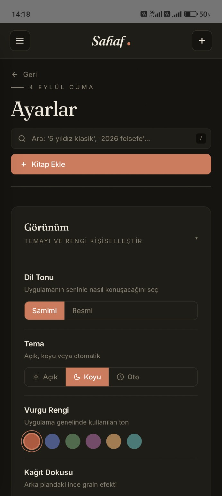

▤
Kütüphane & raflar
ISBN, barkod, kapak tarama veya manuel ekleme. Kendi raflarını kur, kitaplarını görsel olarak keşfet.
Sahaf, kitaplarını yalnızca listelemez. Okuduklarını, yarım bıraktıklarını, altını çizdiğin cümleleri ve zamanla sana ait olan düşünceleri bir arada tutar.


Sahaf, okuma deneyiminin etrafındaki küçük ama değerli ayrıntıları tek bir kişisel alanda toplar.
ISBN, barkod, kapak tarama veya manuel ekleme. Kendi raflarını kur, kitaplarını görsel olarak keşfet.
Sende iz bırakan cümleleri ve kitaplarla ilgili düşüncelerini kaydet. İstersen bir kitaba bağla.
Okurken karşılaştığın kelimeleri anlamlarıyla biriktir; zamanla kendi sözlüğün oluşsun.
Okuma günlerini, notlarını, yapılacaklarını ve hatırlatıcılarını takviminde gör.
Okuma ritmini, yıllık özetini ve kitap geçmişini kendin için takip et. Başkalarıyla kıyas yok.
Açık veya koyu tema, vurgu renkleri ve kişiselleştirilebilir ana sayfa düzeni.
Gerçek uygulama ekranları. Tanıtım için yeniden çizilmiş temsili arayüzler değil.

Raf görünümü
Alıntı defteri
Kişisel sözlük
Okuma takvimi
Okuma istatistikleri
İstek listesi
Koyu temaSahaf hesap açmanı istemez. Kitapların, notların ve alıntıların cihazında kalır; uygulama bunları bir sunucuya yüklemez. Dilediğinde yedekleyebilir ve dışa aktarabilirsin.